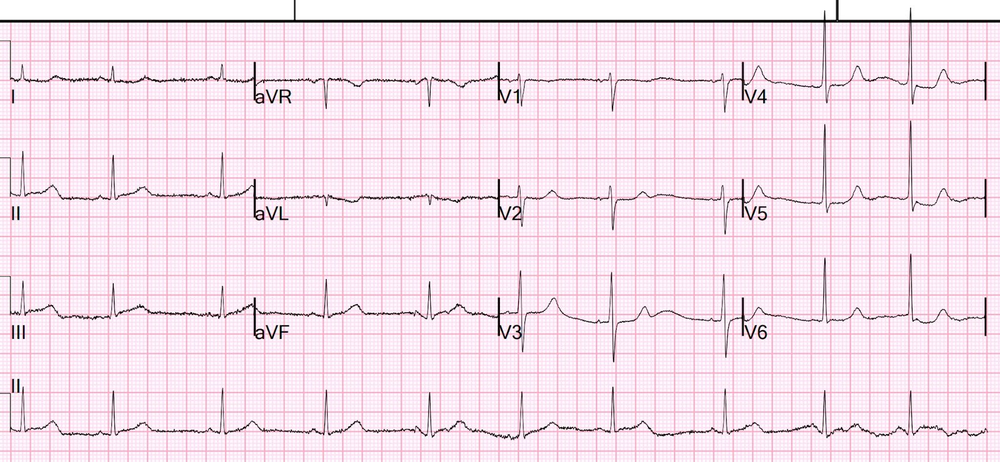
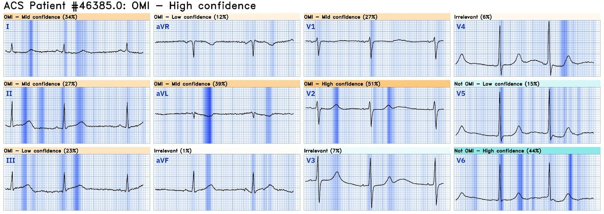
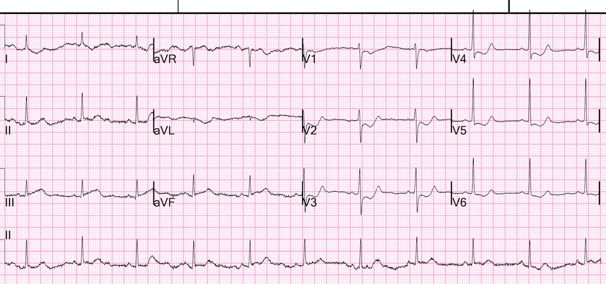
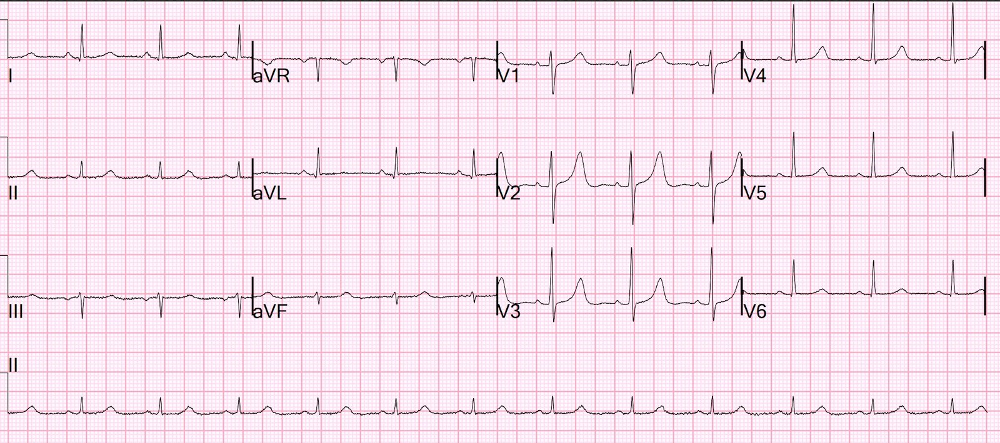
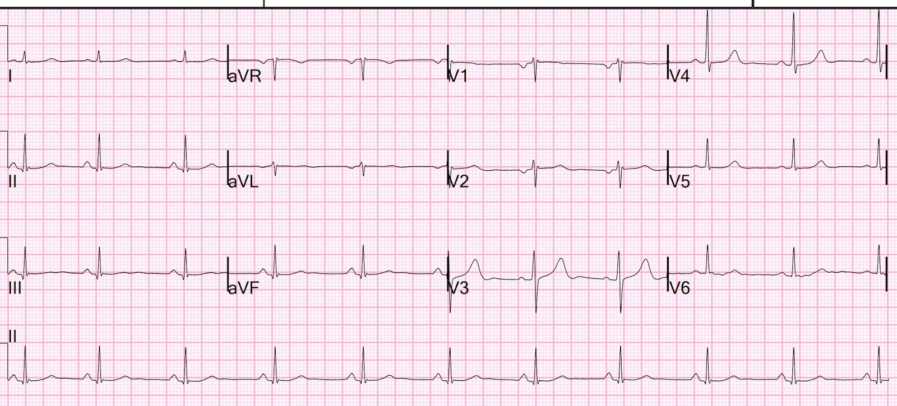
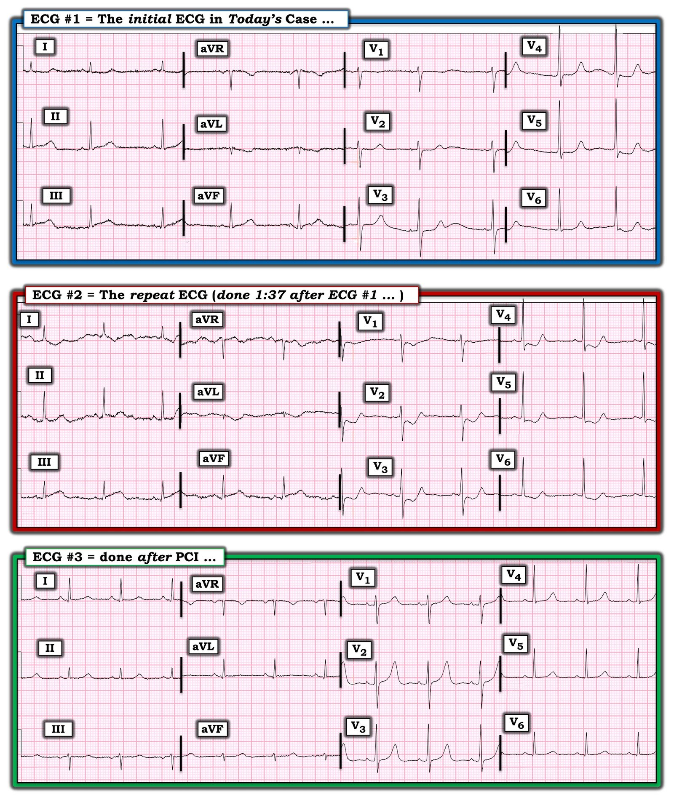
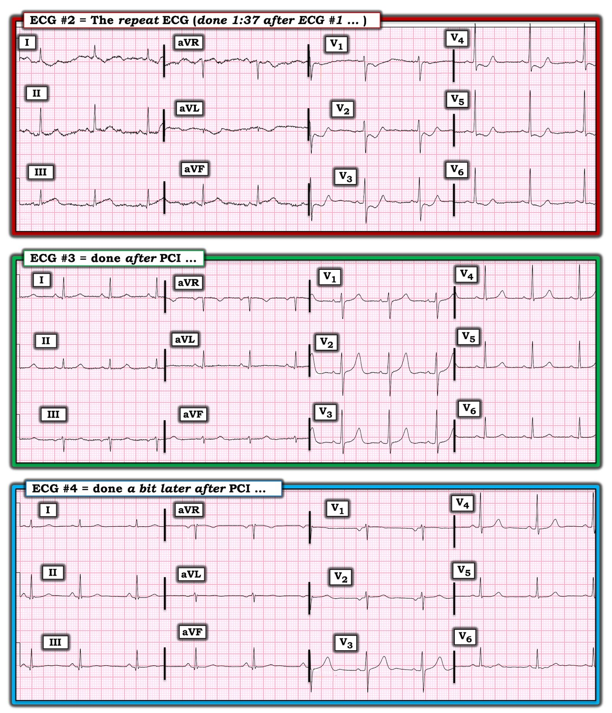
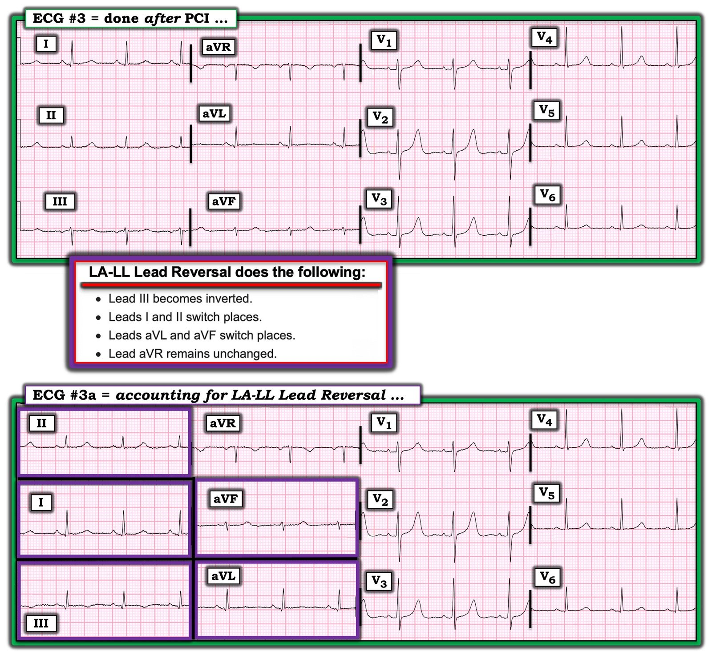

25/06/2024 — OMI có thể rất kín đáo và dễ bị bỏ sót, nhưng lại là một vùng nhồi máu rất lớn.
Bản dịch tiếng Việt của bài "OMI can be very subtle and easy to miss, but be a very large infarction." – Dr. Smith’s ECG Blog. Giữ nguyên toàn bộ 9 hình ảnh của bản gốc.
Tôi đang đọc các điện tâm đồ trên hệ thống và bắt gặp bản này.


Bạn nghĩ sao?
Có STE rất nhẹ ở II, III, kèm sóng T đảo ngược ở aVL.
Đoạn ST ở V2 rất dẹt, với 0,5 mm STD, rất đáng ngờ OMI thành sau.
Chúng tôi đã chứng minh trong bài báo này rằng BẤT KỲ mức STD nào ưu thế ở V1-V4 (đặc biệt ở V2) ở bệnh nhân có triệu chứng ngực đều là OMI thành sau cho đến khi chứng minh được điều ngược lại
Tôi biết rằng nếu đây là một bệnh nhân khó chịu ở ngực, thì đó là OMI dưới-sau.
Vì vậy tôi mở hồ sơ bệnh án và thấy đó là của một phụ nữ ngoài 50 tuổi bị đau ngực (CP) kéo dài vài giờ.
Thật không may, OMI đã không được nhận ra.
Bot AI Queen of Hearts cũng nhận định “OMI với độ tin cậy cao.”


Bấm vào đây để đăng ký quyền truy cập Queen of Hearts
Ca bệnh tiếp diễn
Khi kết quả troponin đầu tiên trả về tăng nhẹ, điện tâm đồ này được ghi 100 phút sau (quá lâu để chờ ghi lại điện tâm đồ!!):


Giờ thì không còn kín đáo nữa: có OMI dưới-sau rõ ràng, hiển nhiên.
Đến lúc này, phòng thông tim được kích hoạt. Chụp mạch vành cho thấy:
Tắc 100% RCA đoạn xa. Ghi nhận dòng chảy TIMI 0 trước thủ thuật. Đã đặt stent. Sau thủ thuật có dòng chảy TIMI III.
Điện tâm đồ ghi sau PCI:


Sóng T dương lớn ở V2, V3 cho thấy tái tưới máu thành sau.
Một thời gian sau PCI:


Troponin vượt quá 50.000 ng/L rất nhanh. Đây là một nhồi máu cơ tim rất lớn.
Một vùng nhồi máu lớn như vậy lẽ ra đã có thể tránh được nếu nhận ra OMI sớm hơn!!
Siêu âm tim:
Phân suất tống máu thất trái ước tính là 58 %.
Rối loạn vận động thành khu trú vùng đáy-thành dưới (đây chính là thành sau), vô động.
Rối loạn vận động thành khu trú vùng đáy vách dưới, vô động.
Những điểm cần học:
1. Tắc 100% mạch vành cấp có thể RẤT kín đáo trên điện tâm đồ.
2. Hãy dùng AI Queen of Hearts để chẩn đoán nhanh!
3. Ghi các điện tâm đồ liên tiếp mỗi 15 phút!! Ngay cả khi bạn không nhận ra OMI, bạn thường vẫn có thể tránh được sự chậm trễ tái tưới máu lâu như vậy bằng cách ghi các điện tâm đồ liên tiếp mỗi 15 phút ở bệnh nhân đau ngực dai dẳng. Hillinger và cs. đã cho thấy tiêu chuẩn ST chênh lên có độ nhạy 21% đối với OMI trên điện tâm đồ đầu tiên, và 30% trên các điện tâm đồ liên tiếp.

==================================
BÌNH LUẬN CỦA TÔI, bởi KEN GRAUER, MD (25/6/2024):
==================================
Vì nhiều lý do — tôi thấy bài viết hôm nay của BS. Smith rất sâu sắc và cực kỳ hữu ích đối với bất kỳ người hành nghề nào có nhiệm vụ đọc điện tâm đồ cấp cứu. Những lý do này gồm:
- Nhận ra tầm quan trọng của việc có người “đọc lại” (overread) điện tâm đồ tại cơ sở lâm sàng nơi bạn làm việc.
- Bản ghi đầu tiên trong ca hôm nay — là một bài kiểm tra tuyệt vời để xem BẠN giỏi đến đâu trong việc nhận ra một OMI kín đáo mà lẽ ra không được bỏ sót!
- Các bản ghi liên tiếp trong ca hôm nay là một dịp ôn tập tuyệt vời về diễn tiến điện tâm đồ của một OMI cấp rồi sau đó tái tưới máu.
- Cuối cùng — ca hôm nay đặt ra một thử thách để xem LIỆU bạn có nhận ra một số vấn đề về vị trí đặt điện cực kín đáo-nhưng-quan trọng xuất hiện trên các bản ghi liên tiếp hay không?
Có người “đọc lại” điện tâm đồ tại cơ sở lâm sàng của bạn:
Ca hôm nay xuất hiện một cách tình cờ — khi BS. Smith chỉ đơn giản là đang đọc các điện tâm đồ được đưa lên hệ thống bệnh viện của ông (không có được bất kỳ bệnh sử lâm sàng nào).
- Tôi đã làm công việc này suốt 30 năm tại phòng khám đào tạo nội trú chăm sóc ban đầu của chúng tôi — nơi tôi đọc lại tất cả bản ghi cho 35 người hành nghề y của chúng tôi. Kinh nghiệm của tôi cũng giống như những gì được mô tả trong bài hôm nay — ở chỗ tôi thường thấy những điều trên điện tâm đồ mà tôi nghĩ có thể đã không được (những) người hành nghề chăm sóc bệnh nhân để ý tới. Điều này khiến tôi phải lấy hồ sơ bệnh án ra xem và/hoặc gọi điện trực tiếp cho người hành nghề y phụ trách để tìm hiểu xem diễn biến lâm sàng ra sao.
- Kinh nghiệm này đóng vai trò như một hình thức “kiểm soát chất lượng” — ở chỗ tôi học được cách đánh giá kỹ năng đọc điện tâm đồ của những người hành nghề của chúng tôi. Nó cũng phát hiện được một tỷ lệ nhỏ nhưng quan trọng các ca mà trong đó một dấu hiệu điện tâm đồ quan trọng, có khả năng ảnh hưởng trực tiếp đến việc chăm sóc bệnh nhân, lẽ ra đã bị bỏ sót nếu tôi không đọc lại điện tâm đồ.
- CÂU HỎI: Có chuyên gia nào đọc lại điện tâm đồ tại cơ sở lâm sàng nơi BẠN hành nghề không? Nếu không — Bạn có nghĩ điều này sẽ hữu ích không? Trong ca hôm nay — nó đã giúp phản hồi lại cho bác sĩ lâm sàng đã bỏ sót các dấu hiệu điện tâm đồ kín đáo-nhưng-quan trọng của OMI cấp.
Dù kín đáo — OMI này lẽ ra phải được nhận ra!
Tôi đồng ý với BS. Smith — rằng OMI cấp hiện diện trên bản ghi đầu tiên hôm nay quả thật kín đáo. Dù vậy, theo ý kiến của tôi — người hành nghề cấp cứu có kinh nghiệm lẽ ra phải nhận ra trong vòng vài giây rằng nếu điện tâm đồ #1 (mà tôi đã đưa lại trong Hình 1) được ghi từ một bệnh nhân đau ngực mới xuất hiện — thì bản ghi này là chẩn đoán OMI cấp cho đến khi chứng minh được điều ngược lại!
- Nhịp trong điện tâm đồ #1 là nhịp chậm xoang và loạn nhịp xoang. Chuyển đạo ngay lập tức thu hút sự chú ý của tôi — là chuyển đạo aVL. Mặc dù sóng T ở chuyển đạo aVL bình thường thường sẽ âm khi QRS ở chuyển đạo này chủ yếu âm — nhưng sóng T đảo ngược (ít nhất là ở phức bộ QRS thứ 1 trong chuyển đạo này) — lại “quá đầy đặn” (hypervoluminous) một cách không tương xứng.
- Bằng chứng ủng hộ rằng dấu hiệu ST-T bất thường này ở chuyển đạo aVL là “thật” — đến từ hình dạng bất thường của đoạn ST thẳng đuỗn bất thường ở chuyển đạo I.
- LƯU Ý: Tôi hoàn toàn thừa nhận rằng có những dao động đường nền do nhiễu ở các chuyển đạo chi của điện tâm đồ #1 — và hình dạng QRST có thay đổi từ nhát này sang nhát khác, khiến đặt ra câu hỏi nhát nào mới là nhát “thật”. Dù vậy — ST thẳng đuỗn ở chuyển đạo I có thấy ở cả 3 phức bộ QRS hiện diện trong chuyển đạo này. Điều này xác nhận rằng tình trạng ST thẳng đuỗn này là một thay đổi thật — và nó củng cố mối lo ngại của chúng tôi về sóng T đảo ngược “quá đầy đặn” ở chuyển đạo aVL.
- Ở chuyển đạo III của điện tâm đồ #1 — sóng ST-T không bình thường. Dù hoàn toàn biết rằng hình dạng ST-T của mỗi nhát trong 3 nhát ở chuyển đạo III có thay đổi — quả thật có vẻ như đoạn khởi đầu ST bị thẳng đuỗn, kèm ít nhất một mức ST chênh lên bất thường nhẹ. Cùng với các thay đổi soi gương gợi ý ở các chuyển đạo bên cao I và aVL — điều này phải làm dấy lên lo ngại OMI thành dưới cấp.
Sự xác nhận rằng các thay đổi kín đáo ở chuyển đạo chi nói trên là thật — đến từ các sóng ST-T chắc chắn bất thường ở các chuyển đạo V2-đến-V6.
- Như chúng tôi đã thường nhấn mạnh về hình dạng bình thường của sóng ST-T ở chuyển đạo V2 và chuyển đạo V3 — bình thường có ST chênh lên nhẹ, với đoạn ST dốc lên từ từ, hòa lẫn một cách khó nhận thấy vào sóng T dương bình thường.
- Thay vào đó — đoạn ST ở các chuyển đạo V2 và V3 của điện tâm đồ #1 rõ ràng là dẹt, nếu không muốn nói là hơi chênh xuống. Như BS. Smith đã nêu — hình dạng đoạn ST bất thường này ở các chuyển đạo trước tim gợi ý OMI thành sau — đặc biệt khi đi kèm các thay đổi ở chuyển đạo chi vừa mô tả gợi ý OMI thành dưới.
- Tình trạng ST thẳng đuỗn bất thường tiếp tục ở các chuyển đạo V4,V5,V6 của điện tâm đồ #1. Dù hoàn toàn biết khó xác định phức bộ nào trong 2 phức bộ QRST ở các chuyển đạo trước tim bên này mới là phức bộ “thật” — ít nhất vẫn có ST dẹt bất thường kèm ST chênh xuống nhẹ.
- ĐIỂM THEN CHỐT (PEARL) #1: BS. Smith đã ngay lập tức nhận ra rằng nếu điện tâm đồ #1 là của một bệnh nhân đau ngực mới xuất hiện — thì bản ghi này thể hiện OMI dưới-sau cấp đang diễn ra cho đến khi chứng minh được điều ngược lại. Những từ ngữ tôi dùng để mô tả các dấu hiệu ST-T bất thường không thể diễn tả hết chẩn đoán điện tâm đồ này. Thay vào đó — chính “bức tranh“ của sóng T đảo ngược “quá đầy đặn” ở chuyển đạo aVL — cùng với đoạn khởi đầu thẳng và ST chênh lên ở chuyển đạo III — cùng với “hình dạng“ của ST dẹt và chênh xuống ở nhiều chuyển đạo trước tim — mới là điều cho người đọc có kinh nghiệm biết trong vòng vài giây rằng có OMI dưới-sau cấp.
- ĐIỂM THEN CHỐT (PEARL) #2: Khi tự hỏi LIỆU các thay đổi ST-T mà tôi đang cân nhắc có “thật” hay không — trước hết tôi tìm 1, 2 hoặc 3 chuyển đạo mà tôi biết chắc có thay đổi bất thường. Ở một bệnh nhân đau ngực mới xuất hiện — không thể nào sóng T đảo ngược ở chuyển đạo aVL và ST dẹt kèm chênh xuống nhẹ ở các chuyển đạo trước tim lại là “bình thường”. Một khi đã xác định được một vài chuyển đạo chắc chắn bất thường — việc nhận ra các bất thường ST-T ít rõ rệt hơn ở các chuyển đạo lân cận sẽ trở nên dễ dàng hơn.
- ĐIỂM THEN CHỐT (PEARL) #3: Vì OMI cấp không được nhận ra trên điện tâm đồ #1 của ca hôm nay — nên điện tâm đồ thứ 2 đã không được ghi trong hơn một giờ đồng hồ. Như BS. Smith đã nêu — vào lúc ghi điện tâm đồ #2 (tức là 1 giờ 37 phút sau điện tâm đồ #1) — chẩn đoán OMI dưới-sau cấp đã trở nên hiển nhiên.
- Điểm MẤU CHỐT: Ngay cả khi người ta không chắc chắn về OMI cấp khi đánh giá điện tâm đồ #1 — thì ít nhất, tình trạng ST dẹt bất thường ở nhiều chuyển đạo trên bản ghi đầu tiên này lẽ ra phải được nhận ra.
- NẾU có bao giờ nghi ngờ liệu một biến cố cấp có thể đang diễn ra hay không — Ghi lại điện tâm đồ trong vòng 10–15 phút (vì các thay đổi ST-T động trong một biến cố đang tiến triển có thể xảy ra nhanh đến bất ngờ).


Diễn tiến của các thay đổi điện tâm đồ trong OMI cấp:
Việc ôn lại các bản ghi liên tiếp được ghi trong quá trình diễn tiến của một OMI cấp rất bổ ích. Làm như vậy là một cách tuyệt vời để mài giũa kỹ năng nhận ra các dấu hiệu kín đáo trên bản ghi đầu tiên — vốn nhanh chóng tiến triển thành những bất thường “tố cáo” rõ ràng.
- Lưu ý rằng những thay đổi ST-T có vẻ rất tinh tế ở chuyển đạo aVL và chuyển đạo III trên điện tâm đồ #1 — đã phát triển thành những bất thường rõ ràng trên điện tâm đồ #2. Thể tích của sóng T đảo ngược ở chuyển đạo aVL đã sâu hơn — và — tình trạng đoạn khởi đầu ST thẳng đuỗn kèm ST chênh lên tại điểm J đã rõ rệt hơn hẳn trên điện tâm đồ ghi lại.
- Diễn tiến của các thay đổi trên các điện tâm đồ liên tiếp giữa điện tâm đồ #1 và điện tâm đồ #2 — còn rõ rệt hơn nữa ở các chuyển đạo trước ngực. Điểm J chênh xuống nhiều hơn, với đoạn ST võng xuống dốc xuống và phần cuối sóng T dương (tức là nghiệm pháp soi gương (“Mirror” Test) dương tính rõ rệt — theo Bình luận của tôi trong bài ngày 21 tháng Chín năm 2022 của Dr. Smith’s ECG Blog) — xác nhận OMI thành sau cấp.
- Theo BS. Smith — thông tim cho thấy RCA đoạn xa tắc 100%. Điện tâm đồ #3 (ghi ngay sau khi PCI thành công) — cho thấy hình ảnh kinh điển của sóng T tái tưới máu thành sau ở các chuyển đạo V1-đến-V5 (tức là ST chênh xuống thấy trên điện tâm đồ #2 đã hết — và diễn tiến thành sóng T cao, nay dương hoàn toàn).
Những vấn đề về đặt điện cực Tinh tế-nhưng-Quan trọng:
Trong Hình 2 — có 2 vấn đề về đặt điện cực tinh tế-nhưng-quan trọng thể hiện qua 3 bản ghi liên tiếp trong hình này. BẠN có nhận ra chúng không?


TRẢ LỜI:
Khi so sánh các bản ghi liên tiếp, điều thiết yếu là phải bảo đảm các khía cạnh kỹ thuật của việc ghi điện tâm đồ được giữ không đổi. Ý tôi là — trục mặt phẳng trán không được dịch chuyển đáng kể từ bản ghi này sang bản ghi kế tiếp — và vị trí đặt điện cực trước tim không được thay đổi đáng kể. Ngay cả thay đổi góc nghiêng giường bệnh nhân cũng có thể ảnh hưởng đến hình dạng QRST ở một số chuyển đạo.
- BẠN có nhận thấy rằng có sự dịch chuyển rõ rệt sang trái của trục mặt phẳng trán trên điện tâm đồ #3 không? Tiện thể — Bạn có nhận thấy luôn rằng sóng P ở chuyển đạo I của điện tâm đồ #3 nay lớn hơn sóng P ở chuyển đạo II không?
- BẠN có nhận thấy rằng các chuyển đạo V1 và V2 của điện tâm đồ #4 đã được đặt quá cao trên ngực không?
Đảo điện cực LA-LL:
Chúng tôi định kỳ đưa lên các ca có sự cố kỹ thuật thường bị bỏ qua (Xin xem Bình luận của tôi ở cuối trang của bài ngày 17 tháng Tám năm 2022 trên Dr. Smith’s ECG Blog để có một loạt link tới các ca minh họa).
- Lý do của sự dịch chuyển rõ rệt và đáng ngạc nhiên của trục mặt phẳng trán thấy trên điện tâm đồ #3 của Hình 2 — là có đảo điện cực LA-LL! Điều này có ý nghĩa — vì nếu không thì hình dạng QRST ở các chuyển đạo chi của bản ghi được ghi ngay sau PCI này sẽ gây bối rối!
- Tôi điểm lại chi tiết cách tiếp cận để nhận biết đảo điện cực LA-LL trong Bình luận của tôi ở bài ngày 26 tháng Năm năm 2022 trên Dr. Smith’s ECG Blog. ĐIỂM THEN CHỐT (PEARL) #4: Ngoài sự dịch chuyển rõ rệt không giải thích được của trục mặt phẳng trán — “manh mối“ gợi ý đảo điện cực LA-LL — là sóng P ở chuyển đạo I của điện tâm đồ #3 rõ ràng lớn hơn sóng P ở chuyển đạo II (và điều này rất bất thường khi có nhịp xoang).
- Trong Hình 3 — tôi hiệu chỉnh lại những thay đổi do đảo điện cực LA-LL gây ra. Lưu ý trên điện tâm đồ #3a — trục mặt phẳng trán và hình dạng QRS ở từng chuyển đạo chi nay trông rất giống (đúng như lẽ phải vậy) với hình dạng QRS ở các chuyển đạo chi của các điện tâm đồ #1, 2 và 4. Cũng lưu ý trên điện tâm đồ #3a — sóng P ở chuyển đạo II một lần nữa rõ ràng lớn hơn sóng P ở chuyển đạo I (đúng như lẽ phải vậy khi có nhịp xoang).
- Cuối cùng, trên điện tâm đồ #3a — Lưu ý sự hiện diện của các sóng ST-T tái tưới máu như dự kiến ở các chuyển đạo chi ở bệnh nhân OMI dưới-sau này (tức là sóng T nay dương ở các chuyển đạo bên I và aVL — và sóng T đảo ngược ở chuyển đạo III).


Đặt chuyển đạo V1,V2 quá cao trên điện tâm đồ #4:
Cuối cùng nhưng không kém phần quan trọng — về mặt lâm sàng, điều quan trọng là phải nhận ra rằng các chuyển đạo V1 và V2 trên điện tâm đồ #4 (trong Hình 2) đã được đặt quá cao trên ngực. Như tôi đã điểm lại chi tiết trong Bình luận của tôi ở bài ngày 17 tháng Tư năm 2022 trên Dr. Smith’s ECG Blog — các dấu hiệu điện tâm đồ xác định lỗi đặt điện cực này là:
- Manh mối #1: Có rSr’ ở các chuyển đạo V1 và V2, trong khi không có blốc nhánh phải không hoàn toàn (IRBBB) (tức là không có sóng s tận ở các chuyển đạo bên I và V6).
- Manh mối #2: Sóng P có thành phần âm sâu ở các chuyển đạo V1 và V2.
- Manh mối #3: Hình dạng phức bộ QRS và sóng ST-T ở các chuyển đạo V1 và V2 rất giống với hình dạng ở chuyển đạo aVR.
- LƯU Ý: Ý nghĩa lâm sàng của việc nhận ra ngay tình trạng đặt chuyển đạo V1,V2 quá cao — là chúng ta mất đi các dấu hiệu sóng T tái tưới máu đang tiến triển mà chúng ta đang mong đợi thấy trên bản ghi sau PCI này.